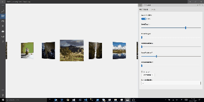

Carousel (Archived)
Warning
This document has been archived in the Windows Community Toolkit.
While the Carousel control is not included in WCT 8.x, there are plans to introduce a modern, improved version in Community Toolkit Labs. The existing implementation from 7.x was deprecated due to its age and limitations, particularly around infinite scrolling functionality.
Community interest and contributions are welcome to help accelerate this effort. You can track progress and express interest in the GitHub discussions:
For more information:
Original documentation follows below.
The Carousel control provides a new control, inherited from the ItemsControl, representing a nice and smooth carousel.
This control lets you specify a lot of properties for a flexible layouting.
The Carousel control works fine with mouse, touch, mouse and keyboard as well.
Syntax
<Page ...
xmlns:controls="using:Microsoft.Toolkit.Uwp.UI.Controls"/>
<controls:Carousel InvertPositive="True" ItemDepth="300"
ItemMargin="0" ItemRotationX="0"
ItemRotationY="45" ItemRotationZ="0"
Orientation="Horizontal">
<controls:Carousel.EasingFunction>
<CubicEase EasingMode="EaseOut" />
</controls:Carousel.EasingFunction>
<controls:Carousel.ItemTemplate>
<DataTemplate>
<!-- Carousel content -->
</DataTemplate>
</controls:Carousel.ItemTemplate>
</controls:Carousel>
Sample Output

Properties
| Property | Type | Description |
|---|---|---|
| EasingFunction | EasingFunctionBase | Gets or sets easing function to apply for each Transition |
| InvertPositive | bool | Gets or sets a value indicating whether the items rendered transformations should be opposite compared to the selected item If false, all the items (except the selected item) will have the exact same transformations If true, all the items where index > selected index will have an opposite tranformation (Rotation X Y and Z will be multiply by -1) |
| ItemDepth | int | Gets or sets depth of non Selected Index Items |
| ItemMargin | int | Gets or sets the item margin |
| ItemRotationX | double | Gets or sets rotation angle on X |
| ItemRotationY | double | Gets or sets rotation angle on Y |
| ItemRotationZ | double | Gets or sets rotation angle on Z |
| Orientation | Orientation | Gets or sets the Carousel orientation. Horizontal or Vertical |
| SelectedIndex | int | Gets or sets selected Index |
| SelectedItem | object | Gets or sets the selected Item |
| TransitionDuration | int | Gets or sets duration of the easing function animation in ms |
Events
| Events | Description |
|---|---|
| SelectionChanged | Occurs when the selected item has changed |
Sample Project
Carousel Sample Page Source. You can see this in action in the Windows Community Toolkit Sample App.
Default Template
Carousel XAML File is the XAML template used in the toolkit for the default styling.
Requirements
| Device family | Universal, 10.0.16299.0 or higher |
|---|---|
| Namespace | Microsoft.Toolkit.Uwp.UI.Controls |
| NuGet package | Microsoft.Toolkit.Uwp.UI.Controls |